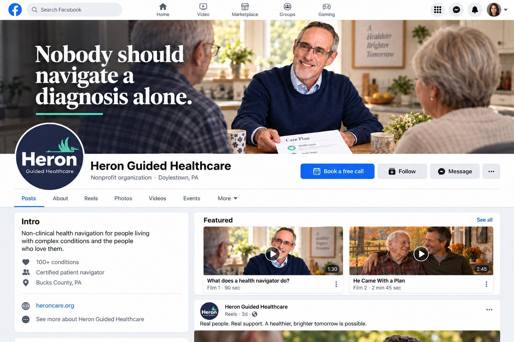
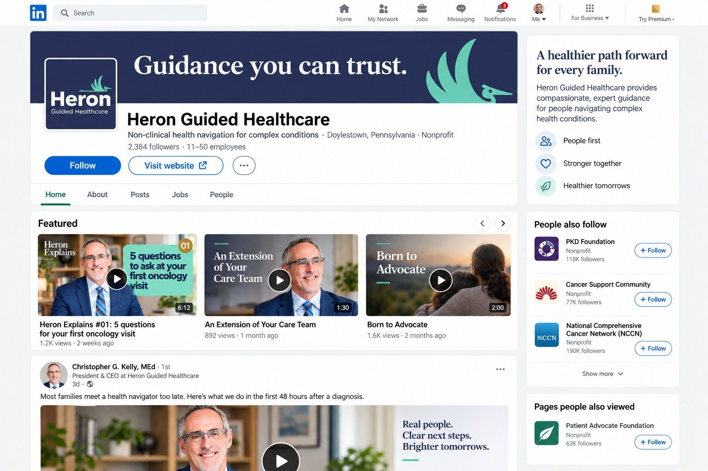

Goal · Understanding
Increase understanding and awareness of the benefit of nonprofit, community-based health navigation.
Health navigation is a service most people can’t picture. Ninety seconds of a navigator at a kitchen table explains it better than a page of text.
Need 04 · Social media
Two new pages, built right from the first post
Your Facebook and LinkedIn pages launched this month, so the “before” is a blank page. Here is what each looks like with the content in place, and the first 90 days of posting.

“Book a call” as the main button
Facebook lets a Page swap Follow for an action. Heron’s action is the Calendly link.
Two videos pinned to Featured
What a navigator does, and one Heron Hero. A new visitor understands Heron in four minutes.
A cover that says the promise
“Nobody should navigate a diagnosis alone,” over a real frame from the shoot.
Reels for the caregiver feed
Short vertical cuts from every piece, written for the adult child who is managing a parent’s care.

The founder story in Featured
Born to Advocate sits at the top of the page, so every visitor meets Chris and his reason for starting Heron first.
Chris posts, the page shares
On LinkedIn a founder’s post reaches far more people than a company page. Each piece of content goes out from Chris first.
Content made for care teams
An Extension of Your Care Team sits in Featured for the nurse navigator or social worker deciding whether to refer.
One look everywhere
Navy, teal and gold on every thumbnail, so Heron is recognizable in a crowded feed.